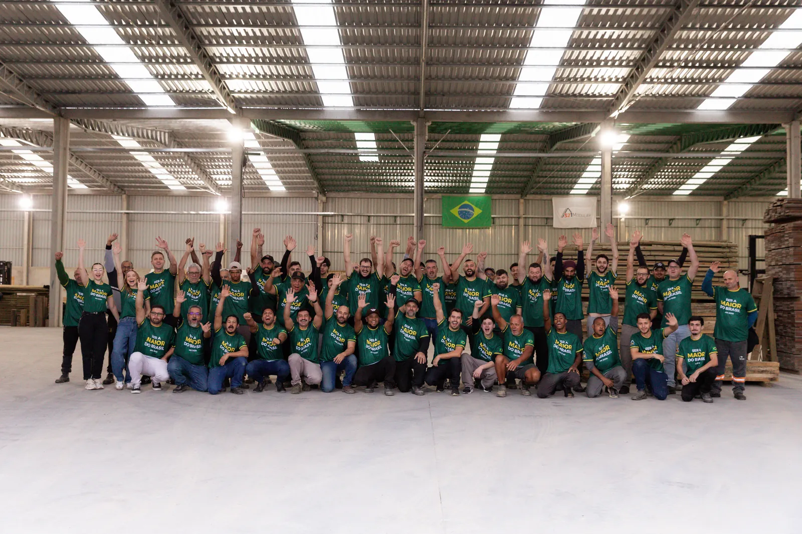
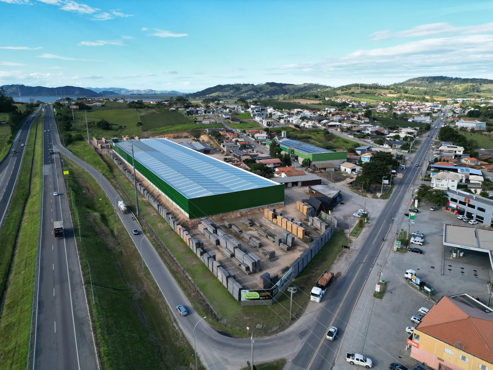
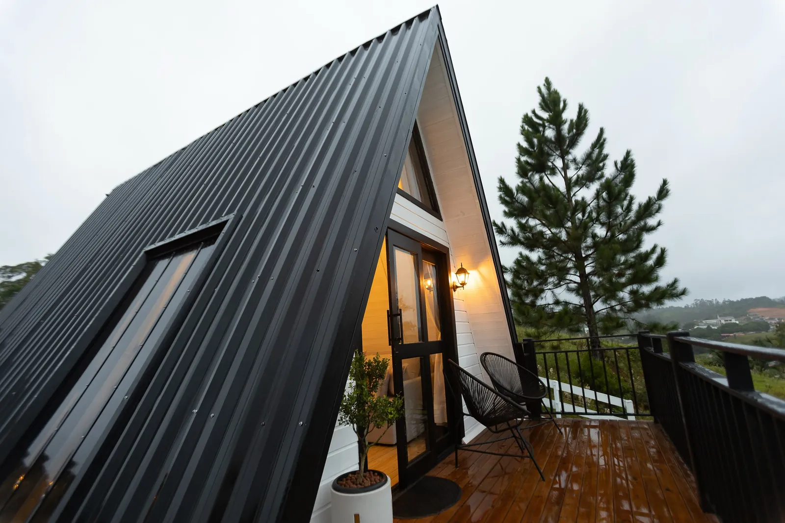
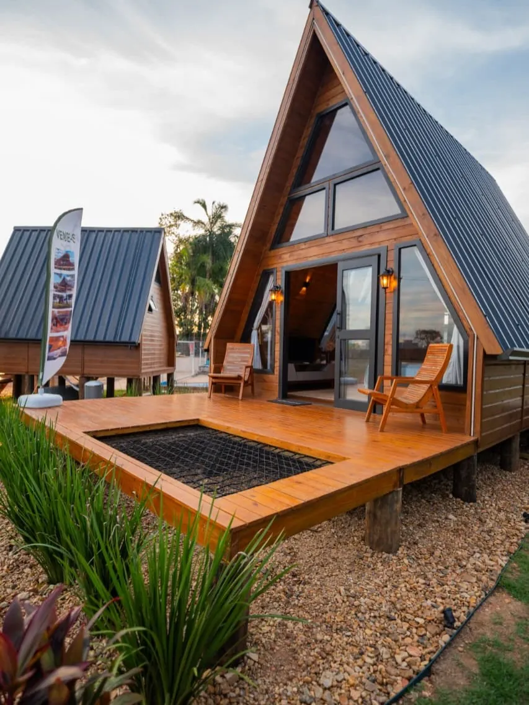
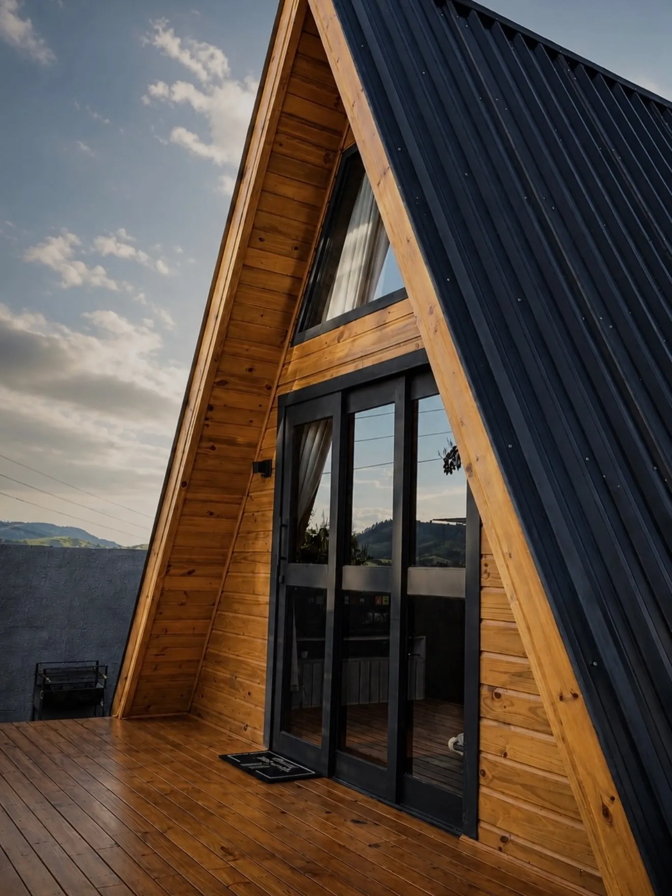

Território
Presença local com estratégia regional.
Atuação definida conforme disponibilidade, potencial de mercado e regras contratuais da rede.
Franquias 321 Modular
Opere um modelo de construções industrializadas de madeira com método, engenharia, presença territorial e suporte da franqueadora.
Nossa história · Desde 1985
A 321 Modular nasceu da experiência do Grupo Pacheco, que atua desde 1985 no setor madeireiro e na construção de casas em madeira.
Essa trajetória reúne pessoas, conhecimento do material e estrutura industrial. Hoje, ela se conecta à tecnologia modular para transformar projeto, produção e montagem em um sistema coordenado.
Conheça a 321 Modular

A oportunidade
Construção modular não é apenas uma forma diferente de construir. É uma maneira mais coordenada de transformar projeto, produção, logística e montagem em uma entrega previsível para o cliente.
Como franqueado, você desenvolve o mercado da sua região com o método, os padrões e o suporte de uma marca especializada em construções industrializadas de madeira.
Entender o modeloUm negócio com método
Uma operação regional apoiada por processos, engenharia e uma rede de conhecimento.
Território
Atuação definida conforme disponibilidade, potencial de mercado e regras contratuais da rede.
Engenharia
Padronização técnica para transformar projeto, orçamento e execução em um fluxo integrado.
Comercial
Materiais, posicionamento e processo para apresentar o produto com clareza ao mercado local.
Suporte
Treinamento e orientação para aplicar o padrão da rede em cada etapa do negócio.
Chalés 321 Modular
Moradia, lazer e negócios.
O turismo de experiência amplia as possibilidades.
Arquitetura e produção industrializada para diferentes usos — da residência à hospitalidade.
Ver projetos no Instagram


Quem já opera
Histórias locais ajudam a mostrar como o modelo ganha forma em diferentes regiões e perfis de operação.
O método trouxe clareza para organizar o comercial, apresentar o produto e desenvolver a região com mais segurança.Operação regional
A combinação entre engenharia, padrão de marca e suporte encurtou decisões importantes na implantação da unidade.Implantação
O chalé chama atenção, mas é o processo por trás dele que sustenta uma experiência consistente para o cliente.Experiência do cliente
Jornada de expansão
Conheça a oportunidade, avalie os documentos e avance somente quando o modelo fizer sentido para o seu perfil e para a sua região.
Iniciar uma conversaConte sobre seu perfil, região de interesse e momento de investimento.
Alinhamento inicial sobre operação, expectativas e aderência ao modelo.
Detalhamento do negócio, suporte, território e estrutura necessária.
Recebimento e avaliação da Circular de Oferta de Franquia nos prazos aplicáveis.
Após a análise da COF e o cumprimento dos prazos aplicáveis, formalização das condições, responsabilidades e território no contrato de franquia.
Preparação da unidade e desenvolvimento do mercado regional com acompanhamento.
Sistema construtivo
Menos etapas concentradas na obra. Mais coordenação entre projeto, fábrica e montagem.
Perfil do franqueado
Perfil empreendedor e capacidade de gestão local.
Atuação comercial e relacionamento com a região.
Compromisso com processos, marca e padrão de entrega.
Capital compatível com a estrutura definida na COF.
Expansão territorial
Dez cidades concentram o foco atual de expansão da 321 Modular no Sul e no interior de São Paulo.
Consulte a disponibilidade territorial e descubra como desenvolver o mercado de construção modular na sua região.
Consultar disponibilidade
Cidades em foco
Perguntas frequentes
Conheça as condições iniciais. A composição do investimento, as projeções e as obrigações serão detalhadas nos documentos oficiais da franquia.
O perfil será avaliado de forma ampla. Experiência comercial, capacidade de gestão e aderência ao método são importantes; os requisitos definitivos fazem parte do processo de seleção.
A região é analisada conforme potencial de mercado, disponibilidade e regras previstas nos documentos da franquia.
O investimento é a partir de R$ 380 mil. A composição completa, os itens incluídos e as condições da unidade serão apresentados pela equipe de expansão e detalhados na COF.
As responsabilidades variam conforme o produto e o contrato. A apresentação comercial detalha o papel da franqueadora, do franqueado, dos fornecedores e do cliente.
O prazo estimado de implantação é de 90 dias, conforme o cronograma acordado. A data de início e as etapas de estruturação, treinamento e preparação da unidade serão alinhadas com a equipe de expansão.
O payback estimado é de 12 meses. Trata-se de uma projeção, não de uma garantia de retorno: o resultado depende de vendas, custos, gestão e condições do mercado local. As premissas serão apresentadas durante a análise da oportunidade.
Implantação coordenada
O caminhão chega com a sequência planejada. Com a base pronta, o munck posiciona o módulo e a implantação assume sua forma final.
Fale com expansão
Preencha seu perfil inicial. A equipe poderá apresentar o modelo, esclarecer as etapas e avaliar a disponibilidade territorial.
Da indústria ao terreno.
Do terreno à renda.